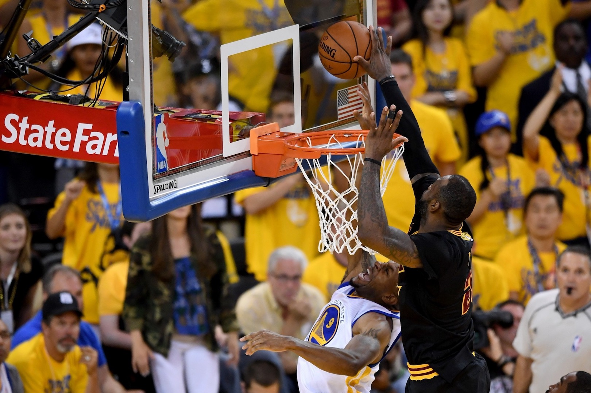
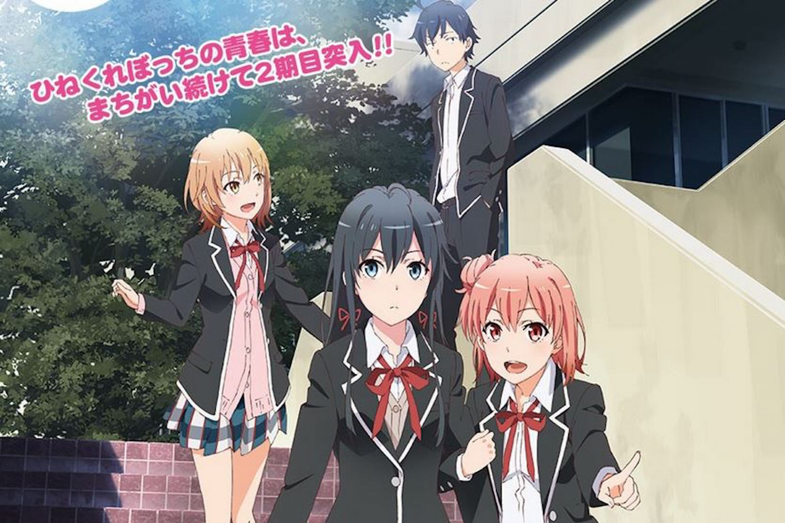
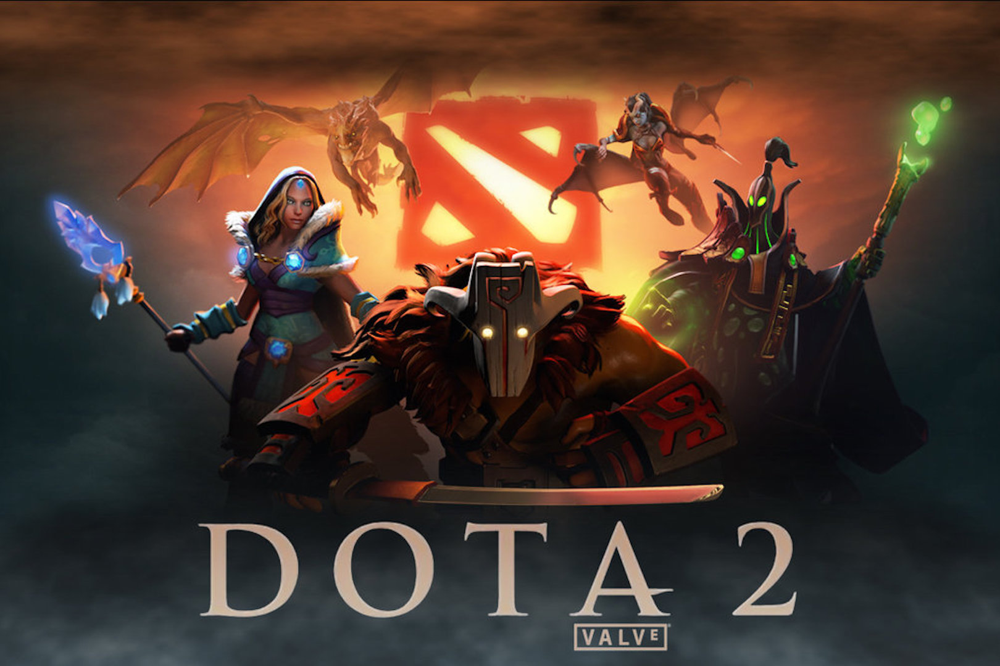

YU
A Chinese Student at The University of TokyoHobby
-

Basketball
I started playing basketball from elementary school.
-

Animation
It goes without saying that Japanese animation is fascinating.
-
Cooking
I started cooking last year and I usually cook Chinese food.
-
Ramen
Ramen is Japanese noodles, my favorite Japanese food.
-

Dota2
Dota2 is a popular free MOBA game. I spent about 2700 hours on this game.
-
Music
Music is indispensable to my daily life and LiSA's music is the one I love most.
{kind=link}
{kind=link}
{kind=link}
{kind=link}
{kind=link}
{kind=link}
About Me
I was born in Shanghai, China in 1994. It was lucky for me that I grew up healthy and sound with the cultivation of my parents and teachers. In 2010, I entered The High School Affiliated to Fudan University, one of the top high schools in Shanghai. When I finished the first year of high school, I got an opportunity to study at a Japanese high school with full scholarship. So I decided to come to Japan and entered Gyosei International School in 2011. Atfer a period of study, I was admitted to the University of Tokyo. I chose information and communication engineering as my major and I started to research Deep Learning for my bachelor thesis as a member of Aizawa Lab from this April. I have a wide range of interests as stated previously. I can speak Chinese, Japanese and English. I would like to be friends with everyone. Please feel free to contect me.
FOLLOW ME